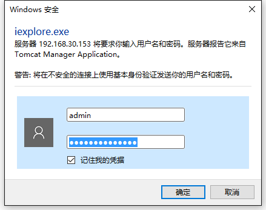
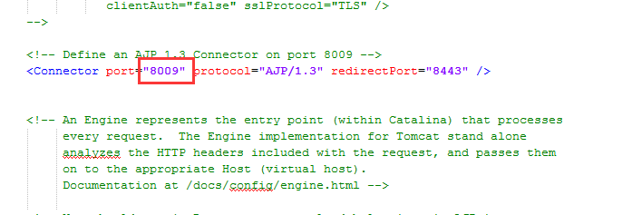

Tomcat的安装以及简要调优
1 Tomcat的安装
文档主要介绍一个和多个Tomcat的安装、应用程序的部署以及常见问题解答。此处以Tomcat8为例但是现场请安装8.5。
1.1 Tomcat的安装
Tomcat使用免安装版，无需安装解压即可将压缩包解压到指定的路径。
1.1.1 查看端口使用情况
在命令窗口中使用“netstat -ano”查看端口使用情况，

图4.1
1.1.2 修改端口号
打开Tomcat-8\conf\server.xml文件，修改端口号,将Connector
port设置为使用的端口，防止端口被占用，
图4.2
1.1.3 设置管理员密码
设置管理员用户和密码会增加远程攻击可能性，所以本处只做学习说明，根据之后的需要调用。项目安装中不设置。
设置Tomcat管理员用户名和密码，打开Tomcat-8\conf\server.xml文件Tomcat-users.xml，增加下面代码，建议设置为
“admin”，
\<role rolename=”manager-gui”/>
\<user username=”admin” password=”admin” roles=”manager-gui”/>
图4.3
1.1.4 调整Tomcat内存大小
以编辑方式打开D:\apache-Tomcat-8\bin目录下的catalina.bat文件，在文件\@echo
off下，增加“set JAVA_OPTS=-server -Xms512m -Xmx1024m -XX:PermSize=512M
-XX:MaxPermSize=1024M”PermSize可以根据实际情况进行调整，可在一定程度上解除在中间件运行过程中发生内存溢出的异常。
图4.4
1.1.5 启动Tomcat服务
找到文件夹打开Tomcat-8\bin\ startup.bat，双击启动，即可看到部署成功。
图4.5
也可以打开IE浏览器，在地址栏中输入：http://localhost:80/ ；其中
80为端口号，要看自己的实际设置。出现如下图所示网页，即表明Tomcat安装成功。
图4.6
1.1.6 查看部署项目
点击图中的的Manager App可查看部署的项目。
图4.7
点击“Manager
App”，弹出用户名和密码界面，即在Tomcat-users.xml文件中设置的用户名和密码。

图4.8
输入用户名和密码，可查看部署的项目。
图4.9
1.1.7 开启GZIP压缩
在TOMCAT_HOME/conf/server.xml
中的找到如下Connector将compression改成on并修改其它属性致图片状。

图4.10
1.2 多个Tomcat的安装和配置
Tomcat可以作为一款绿色软件使用，单独安装或直接拷贝都可以完成Tomcat的部署，使用免安装版。
1.2.1 拷贝
免安装版的Tomcat可在同一个电脑上部署多个，将Tomcat-8文件下的所有子文件，复制到Tomcat-8082文件夹下，注意第一个Tomcat的配置不变，修改新增的Tomcat下一些参数。
1.2.2 修改端口号
打开D:\ Tomcat-8082\conf目录下的server.xml文件，需要修改三个端口号：
- 将之前的“80”端口修改为其他端口号，如“8082”：
图4.11
- 将之前的“8005”端口修改为其他端口号，如“8006”：
图4.12
- 将之前的“8009”端口修改为其他端口号，如“8092”，8443这个端口不可更改。

图4.13
1.3 部署和移除应用程序
在Tomcat中部署和移除项目，共三种方法分别为：手动创建xml文件方式、控制台方式，直接拷贝应用程序到webapps下方式。
1.3.1 手动创建xml文件方式（推荐）
对于免安装的Tomcat，并没有控制台功能，这种情况下，推荐采用手动创建xml文件方式来部署应用服务。
1.3.1.1 部署
在“D:\
Tomcat-8\conf\Catalina\localhost”下新建“文本文档”，重命名为SCMIS.xml，编辑SCMIS.xml，填充内容如下：
\<?xml version=”1.0” encoding=”UTF-8”?>
\<Context
crossContext=”true” docBase=”E:\webapp\SCMIS” path=”/SCMIS”
reloadable=”true”>
\</Context>
图4.14
其中，docBase的值为web应用程序所在文件路径（文中红色字体），path的值为web应用程序的名称（文中红色字体）。
1.3.1.2 移除
如果不想启动SCMIS应用服务，只要将“D:\
Tomcat-8\conf\Catalina\localhost”下对应的SCMIS.xml文件删除即可。
1.3.2 直接拷贝应用程序到webapps下方式
1.3.2.1部署
直接将web应用程序拷贝到“D:\Tomcat-8\webapps\”下即可。
1.3.2.2 移除
如果想不启动SCMIS应用服务，将web应用程序从“D:\ Tomcat-8\webapps\”下删除即可。
1.4 FAQ
1.4.1为Tomcat增加Title
由于现场在实际使用中，可能会在同一台服务器上同时启动多个Tomcat，很容易搞混淆,因此为Tomcat增加Title便于识别当前启动的是什么系统。
在Tomcat安装目录D:\
Tomcat-8\bin中，找到catalina.bat文件并打开，打开搜索框，搜索‘TITLE’找到如下位置，参照下面图片进行修改，注意：第二个红框要加引号
图4.15
修改后的效果，如下图所示;
图4.16
1.4.2 Tomcat启动时一闪而过
解决方法有三种：
环境变量设置不对，先检查环境变量是否设置完全正确了；
环境变量检查完全正确的情况下，在startup.bat文件的最后面,换行加上pause；然后再启动看下报错信息
图4.17
- 如果以上方法设置后，还是一闪而过，则找到startup.bat倒数几行的位置；
图4.18
将start修改为run,如下，再启动Tomcat，注意：使用第三种方法知道了错误原因后，则务必将run修改回start。
图4.19
1.4.3 启动Tomcat失败
启动Tomcat失败，错误信息如下：“java.lang.OutOfMemoryErrorthrownfromtheUncaughtExceptionHandler
in thread “startQuertz_QuartzSchedulerThread”
失败原因是内存溢出，解决办法参考4.1.4 调整Tomcat内存大小。
1.4.4 SCMIS项目Running值是false
Tomcat中Manager app中SCMIS
Running值是false，在onf\Catalina\localhost下新建SCMIS.xml时，Tomcat服务应该关闭。